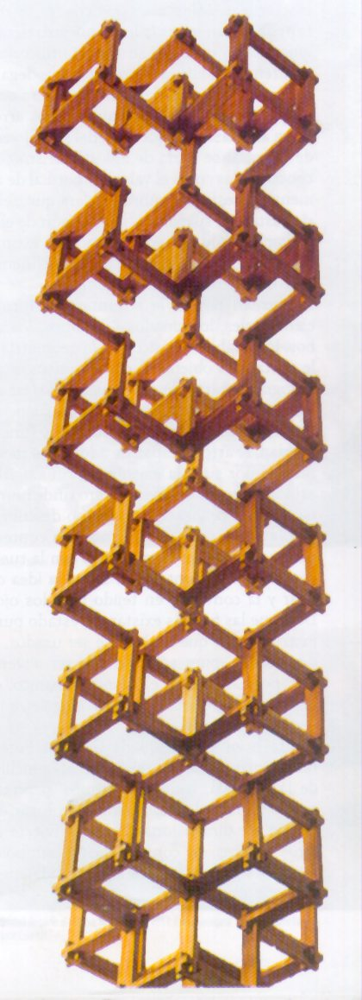

PERSONAJE
Germán Botero
Por JORGE GÓMEZ PINILLA
 |
El escultor Germán Botero, además de ilustre hijo del Fresno, cumple desde hace décadas un renombrado papel en el medio artístico nacional e internacional. ¿Cuál es el recuerdo más memorable que tiene de Fresno?Habría mucho que recordar, pero en especial recuerdo las fincas de mi abuelo. Yo andaba mucho con él, y él tenía una finca de Fresno hacia Manizales, donde me la pasaba con mis amigos. Allá teníamos entera libertad, podríamos hacer lo que fuera, nadie estaba pendiente de nosotros. Y lo comparo con la situación de ahora, en la que los chicos andan como muy encerrados. Entre, el Fresno anterior y el actual, con cuál se queda?Bueno, al Fresno de ahora he hecho unos viajes muy cortos. Realmente no podría tener una visión clara y profunda del Fresno de ahora. En su parte urbana lo veo muy parecido. En su parte ambiental, a raíz de la producción de café caturra, todo el paisaje cambió. Eso me impresionó, porque el caturra homogenizó el paisaje, que antes era muy diverso. ¿Influyó para algo Fresno en su vocación artística?Sí, sí. El hecho de haber vivido en el Fresno influyó mucho en mi propuesta escultórica. Específicamente la producción de panela, que es un proceso muy interesante. Eso me dio desde pequeño la idea de trabajar procesos. |
Recuerdo unas obras suyas envueltas en fique...
Hay unas obras anteriores al 90, muy grandes, realizadas en fique, sí. Pero no tienen que ver directamente con Fresno. Están ligadas a una investigación que hice en la región de Antioquia sobre manufactura y artesanado, producción de fique, producción de sombreros en Aguadas, minería de oro y trabajo en cuero. Esta investigación influyó mucho en el desarrollo de mi obra.
Se nota también en su obra una inspiración indígena, diría precolombina...
Hay una parte de mi obra, de los 90 en adelante, que está relacionada. Son unas tumbas. La primera surgió de un viaje que hice a la región de San Agustín, en el Huila. Toda esa obra está conscientemente relacionada con elementos prehispánicos. Sin embargo, en obras anteriores en fundición hay elementos indígenas, pero no son muy conscientes. Han salido así de modo casual.
Hablando de los variados materiales que componen su obra, cómo es eso de decidirse por éste o por aquél...
Los materiales corresponden a una relación entre concepto y técnica. Yo he trabajado muy diferentes materiales, sí. La madera la he trabajado en modelos, moldes y maquetas. He trabajado la fundición de bronce y aluminio, los concretos, y recientemente en mi viaje a China trabajé mármol y granito. Siempre, de lo que se trata es de lograr un encuentro entre las ideas que quiero expresar, y la técnica a usar.
El arte como expresión de un estado individual. En qué momento entonces el artista recoge el sentir de una comunidad...
Una obra de arte refleja inevitablemente unas condiciones sociales por un lado, y un desarrollo técnico, por otro. Hay cosas que en lo técnico yo no puedo realizar en Colombia, aunque quisiera. Y hay obras que sólo surgen de las condiciones específicas de lo social en Colombia.
Hoy, a qué se dedica.
Estoy trabajando muy fuerte en una retrospectiva que se va a realizar el próximo año en el MAMBO, que involucra a todo el museo
Además, trabajo en una serie que inicié en el 2004 en Santa Marta. Es una serie con madera recogida en la playa. Es un trabajo nuevo, muy especial.
¿Es lo que estoy viendo en su taller?
Sí. Toda esta madera es traída de Santa Marta. Con esta idea hice una primera instalación en Maracaibo (Venezuela), con madera recogida en el Golfo de Maracaibo. Y el año pasado hice una gran instalación en el Museo Bolivariano de la Quinta de San Pedro Alejandrino. A la madera no se le hace nada, sino que se la organiza de cierta forma.
Entre la gente vinculada a la celebración del Sesquicentenario de Fresno hay gran entusiasmo por la realización de una obra suya, que gira en torno a un Parque Temático. Cómo es eso.
Esta idea fue surgiendo de charlas con algunos amigos del Fresno. La primera idea era que se realizara una escultura. Yo les propuse más adelante que hiciéramos un parque como escultura. En el arte contemporáneo se trabaja mucho lo que se llama Arte Ambiental, que es trabajar sobre la geografía, sobre el sitio, y trabajarlo con sentido escultórico. Propuse el tema de plantas medicinales, porque en ningún pueblo de Colombia existe uno. Entonces, me parece que si quiere tener un atractivo turístico, la idea es que a los turistas que se desplazan por la región cafetera se les diga que en Fresno hay un parque de plantas medicinales. Igual el parque puede ser rentable, que se puedan vender sus productos. La idea va en ese sentido, de atraer a la gente, de tener algo que mostrar. De todos modos, hay otros proyectos que pueden ser más inmediatos. Como la Casa de la Cultura.
¿Esa también es idea suya?
No. Es idea de William Ospina y los que están con él para la celebración. Lo de la Casa de la Cultura me parece más rápida, y se pueden desarrollar las otras alrededor de ella.
¿Ya hay un lote para el Parque Temático?
No. En algún momento, con el alcalde anterior había un terreno, en el Alto de la Virgen, y lo último que supe fue que colocaron una antena de Comcel. Pero más importante que un sitio, es que logremos entusiasmar a la gente.
Hay un colega suyo, escultor además de pintor, Fernando Botero. ¿Algún parentesco?
No un parentesco inmediato. Todo el apellido Botero viene de Sonsón, de esa región de Antioquia. En todas partes del mundo me preguntan lo mismo, que si soy familiar de él. El fenómeno Botero es importante porque enaltece el nombre de Colombia ante el mundo, pero no tengo ninguna proximidad con el maestro. Desde el punto de vista escultórico, menos.
¿Y cómo le parece su obra?
Yo creo que el maestro Fernando Botero es muy respetable en su pintura. En escultura, tendría mis reservas.
¿Algún mensaje para sus coterráneos de Fresno?
Bueno, vamos a ver cómo este año logramos crear una gran conciencia, una gran reflexión sobre nuestra tierra, para hacerla avanzar y ponerla como lo merece: como un sitio muy importante del país.
|  | |